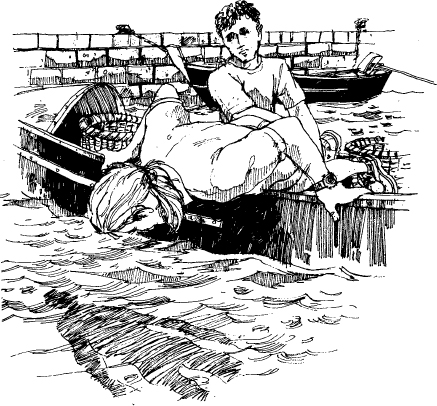

Listen to Part 1:
‘John! Dậy đi, năm giờ rồi!’ Mark nói. ‘Đây, cà phê đây. Cậu ngủ có ngon không?’
‘Được, cám ơn,’ John trả lời ngái ngủ.
John cầm ly cà phê và uống một hơi cạn sạch. Bên ngoài trời tối thui.
‘Daeng có đến không?’ John hỏi trong lúc mặc quần áo.
‘Hy vọng là vậy,’ Mark nói. ‘Tôi muốn tìm xác con tàu đắm kia. Tôi đã trả anh ta nhiều tiền lắm.’ Mark nhìn đồng hồ.
‘Đi thôi,’ cậu ta nói.
John và Mark trèo xuống The Quest và đi dọc theo bến cảng. Trời tờ mờ sáng và mát mẻ. Trên bầu trời vẫn còn một vài ngôi sao. Nhưng trên phố cũng tấp nập người đi lại. Một số người đang khuân những giỏ hàng xuống những chiếc thuyền đậu bên mép nước. Những người khác thì đang đi xe đạp đến chỗ làm. Còn các chủ cửa hàng thì đang mở cửa hàng của họ.
Mark và John đi nhanh về phía những chiếc thuyền câu nhỏ. Khi họ đến nơi, ánh sáng đầu tiên của mặt trời vừa xuất hiện trên thị trấn. Những ngôi sao đã biến mất. Không có gió và biển cũng rất êm. Một số ngư dân đã chèo thuyền ra khơi. Họ đang vá lưới. Họ chuẩn bị đi đánh cá.
Mark và John đi đến chiếc thuyền của Daeng. Đây là thuyền mới và rất gọn gàng. Có những chiếc lưới và giỏ đựng đồ dọc theo boong thuyền. Mọi thứ đã sẵn sàng để ra khơi đánh cá. Nhưng trên thuyền không có ai.
‘Có ai không? Daeng?’ Mark gọi.
Listen to Part 2:
Không có tiếng trả lời. Một số ngư dân trên những chiếc thuyền khác quay đầu lại nhìn. Họ nhìn hai anh chàng farang.
‘Thôi được rồi, anh ta vẫn chưa đến, vậy thì mình sẽ phải đợi thôi,’ John nói.
Mark và John ngồi xuống bên cạnh chiếc thuyền. Một lúc, họ thích thú quan sát những người ngư dân. Mặt trời đã lên cao trên bầu trời. Trời bắt đầu ấm hơn.
Mark nhìn đồng hồ và đứng dậy.
‘Daeng đâu rồi?’ Cậu ta nói. ‘Giờ đã là sáu giờ rồi.’
‘Anh có nhìn thấy Daeng không?’ Mark hỏi những ngư dân khác. Không ai thấy Daeng cả.
‘Có lẽ anh ấy đi mua đồ gì đó cho chiếc thuyền,’ John nói. ‘Có lẽ anh ấy có để lại tờ giấy trên thuyền. Tại sao chúng ta không lên xem thử?’
Hai người đàn ông nhảy xuống thuyền. Họ khám xét chiếc thuyền thật cẩn thận.
‘Không có gì nhắn ở đây cả,’ Mark nói. ‘Này, chúng ta đã ở đây gần một tiếng đồng hồ rồi. Tôi không nghĩ Daeng sẽ đến nữa đâu. Thôi đi. Chúng ta còn có việc phải làm.’
Bây giờ, hầu hết các thuyền câu đã rời bến và mặt trời đã lên cao trên bầu trời. Mark và John trèo khỏi thuyền của Daeng.
Listen to Part 3:
John nhìn xuống thuyền của Daeng lần cuối. Đột nhiên, anh ta dừng lại và quay lại mép bến.
‘Có thứ gì đó dưới nước,’ John nói. Anh ta chỉ xuống biển.
‘Là cái gì thế?’ Mark hỏi.
‘Tôi không biết,’ John trả lời. ‘Nhưng tôi thấy có thứ gì đó đang sáng ở đó.’
Mark quay lại và đứng bên cạnh John.
‘Thật kỳ lạ,’ Mark nói.
Họ quay lại thuyền và nhìn xuống mép thuyền.
‘Cầm chân tôi,’ Mark nói. ‘Tôi sẽ nhoài người ra khỏi mép thuyền.’
Mark từ từ nhoài người ra khỏi mép thuyền. Bây giờ cậu ta đã nhìn thấy thứ gì đó dưới nước.
‘Kéo tôi lên! Kéo tôi lên!’ Mark hét lớn.
Listen to Part 4:

‘Chuyện gì vậy? Cậu nhìn thấy gì? Thứ gì đang sáng dưới đó?’ John hỏi.
Mark đột ngột ngồi xuống trong thuyền.
‘Đây là - đây là đồng hồ,’ Mark nói. ‘Mặt trời đang chiếu sáng mặt đồng hồ.’
‘Đồng hồ á?’ John nhắc lại. ‘Có gì đáng sợ từ một chiếc đồng hồ thế?’
‘Đồng hồ này đang nằm trên tay Daeng. Daeng nằm dưới đó,’ Mark nói. ‘Anh ấy đã nằm ở đó suốt thời gian qua.’
Mặt Mark tái nhợt. Cậu ta sợ hãi.
‘Tôi sẽ gọi cảnh sát,’ John nói.